CSCI 5499A / ENGR 6999F · Multimodal Foundation Models · University of Mississippi
Subhami Mohan · 18 November 2026
This project trains a small flow-matching model that transports samples of a standard 2D Gaussian onto a target point distribution, and then asks what the shape of the learned transport costs at sampling time. Everything runs on CPU; the model has 33,794 parameters.
| Device | CPU, Intel64 Family 6 Model 183 Stepping 1, 8 torch threads |
|---|---|
| Platform | Windows-10-10.0.26300-SP0 |
| Python / torch | 3.11.17 / 2.14.1+cpu |
| numpy / matplotlib | 2.4.6 / 3.11.2 |
| Architecture | MLP 3 → 128 → 128 → 128 → 2, SiLU; input (x, y, t), output (vx, vy) |
| Parameters | 33,794 |
| Training | 30,000 steps, batch 256, Adam lr 2×10⁻³ |
| Measured runtime | Part 1 training 27.93 s · Part 2 training 26.40 s · reflow 5.28 s |
Recorded automatically into results/environment.json. Random seeds are fixed and stated per
experiment: seed 0 for Part 1, seed 1 for the Part 2 target and training, seeds 0 and 1 for every Part 3 comparison.
Checkpoints are saved so that re-plotting or changing the sampling step count never requires retraining.
The source is a standard 2D Gaussian. The target is a ring of radius 2.0 with radial jitter of standard deviation 0.12: an angle is drawn uniformly on [0, 2π) and a radius from N(2.0, 0.12²). The sampled target has mean radius 1.9998 and spans roughly [−2.2, 2.2] in both axes. Source and target points are paired at random, a time is drawn uniformly on [0, 1], and the interpolated point and target velocity are formed from the equations above.
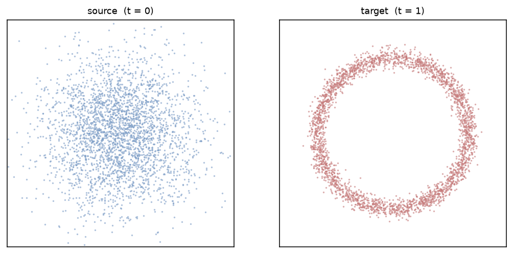
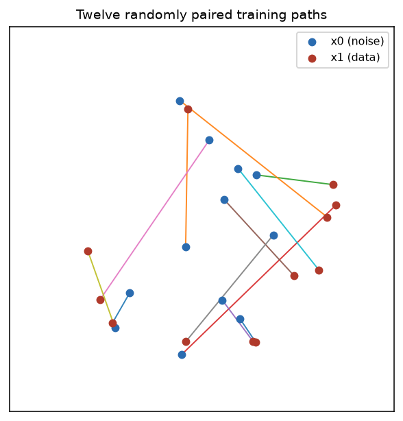
Why the velocity is constant along each training path. Differentiating the interpolation gives dxt/dt = x1 − x0, which contains no t. Each path is a straight line travelled at uniform speed, so the regression target is the same vector at every point on it. Checked numerically on pair 0, with x0 = (−1.1258, −1.1524) and x1 = (−1.3962, −1.6236): the point at t = 0.1 is (−1.1529, −1.1995) and at t = 0.9 is (−1.3692, −1.5765), while the target u is (−0.2704, −0.4713) at both.
This is a property of each individual pair, not of the field. Different pairs crossing the same location carry different u, which is what the next two tasks turn on.
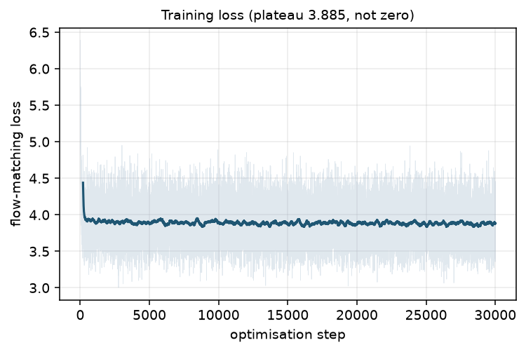
The loss plateaus at 3.88, not at zero, and that is expected rather than a failure. With random pairing, many different (x0, x1) pairs pass through the same (xt, t) while demanding different velocities. No function of (x, y, t) can satisfy all of them, so the minimiser at each location is the conditional mean of the target velocities there, and the spread about that mean is irreducible. What the network predicts is therefore an averaged velocity field, not any individual pair's displacement.
Starting from 4,000 fresh Gaussian samples never seen in training, integrated with 50 Euler steps. No endpoint is supplied at any time: the network sees only (x, y, t).
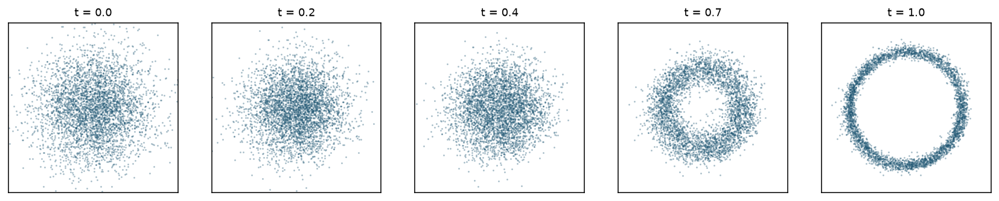
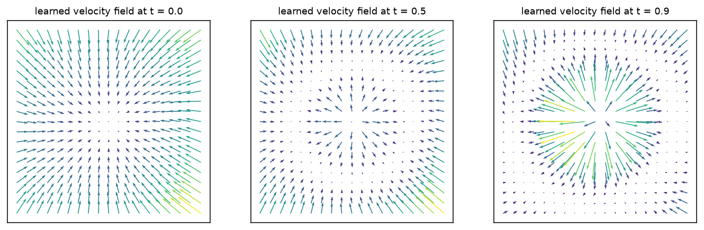
| Measure | Value |
|---|---|
| Generated mean radius | 2.0124 (target 2.0) |
| Histogram discrepancy vs independent target samples | 0.1905 |
| Mean excess path length | 0.3742 ± 0.2187 |
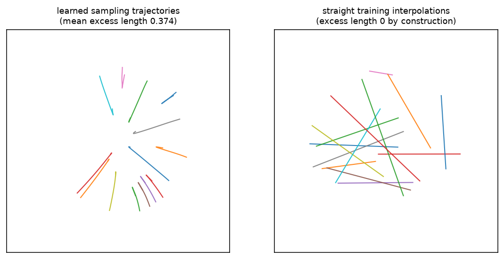
The distinction the brief asks for. The training paths are straight by construction - each joins one x0 to one x1. The sampling trajectories are not those lines. At generation time the particle has no endpoint and follows the learned field, which at every location is an average over all pairs passing through it, so it is steered continuously and its route bends. Measured on a common grid, a trajectory here is on average 0.374 longer than the straight line between its own start and end. Straight training paths do not imply straight sampling paths, and that gap is exactly what Part 3 tests.
The target is the letter S, rendered to a 240 × 240 boolean mask by matplotlib's own text engine, of which 25.13% is foreground. Foreground pixels are drawn uniformly with replacement and jittered by up to one pixel, so the result is a continuous cloud rather than a lattice of pixel centres; the image square maps to [−2.2, 2.2]² with the y axis flipped. 20,000 points are sampled. Because the glyph is generated locally, no external image is used and there is no third-party licensing to record.
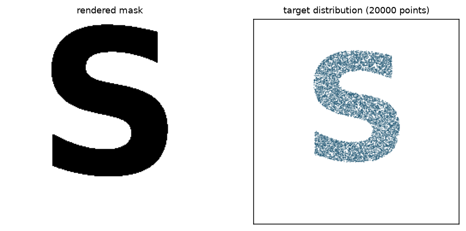
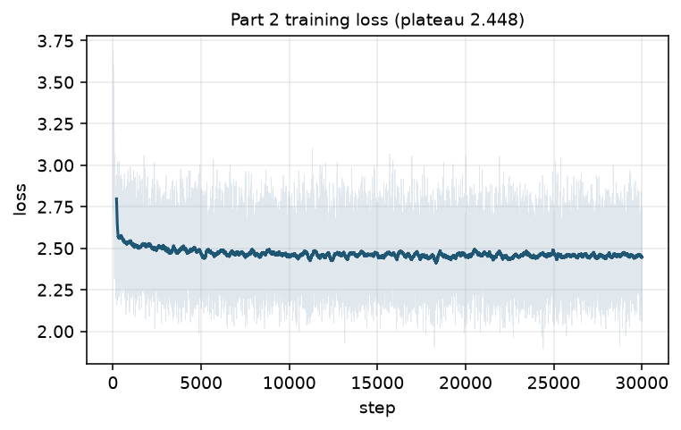
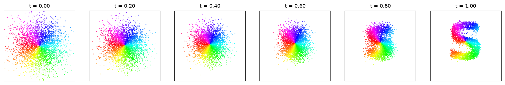
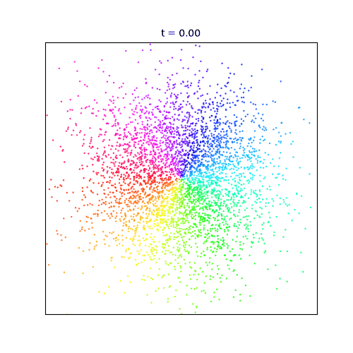
figures/p2_t2_animation.gif).How colour is assigned. Each particle is coloured once, at t = 0, by the angle of its own starting point in the Gaussian mapped through an HSV wheel. That colour is then carried by the same particle for the whole animation, so the frames show where each region of the noise ends up - the colour wheel survives into the letter, which means the transport is broadly orientation-preserving rather than scrambling.
Colour does not participate in training. The network maps (x, y, t) to a 2D velocity and has no colour input and no colour output. Colour is purely a visualisation attribute attached afterwards to particle indices.
Rendering the GIF took 3.3 s while integrating the field for all 61 frames takes milliseconds - the asymmetry the brief warns about.
With the trained weights fixed and the same 6,000 initial Gaussian samples used at every setting, the number of Euler steps is varied. Quality is a fixed-grid histogram discrepancy (total variation) against 6,000 independent samples of the target, on a 40 × 40 grid over [−3, 3]² plus a bucket counting points outside that square. The same grid is used for every comparison.
| Euler steps | Network evaluations | Sampling time | Histogram discrepancy | Outside grid |
|---|---|---|---|---|
| 1 | 1 | 1.1 ms | 0.9692 | 0.00% |
| 5 | 5 | 5.6 ms | 0.3265 | 0.00% |
| 10 | 10 | 10.5 ms | 0.2132 | 0.00% |
| 25 | 25 | 26.6 ms | 0.1583 | 0.00% |
| 50 | 50 | 52.5 ms | 0.1512 | 0.00% |
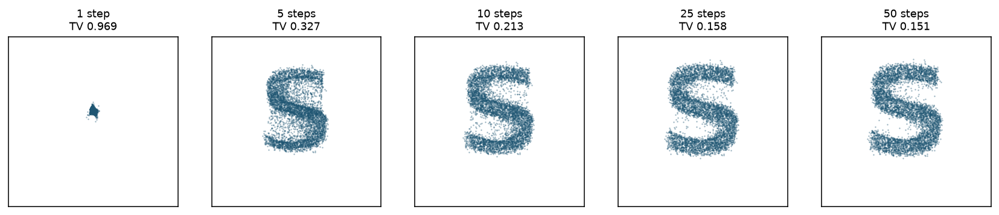
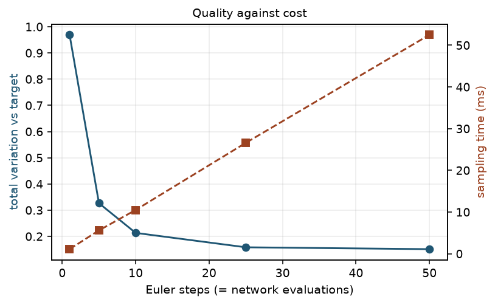
What changes with fewer steps. Sampling time scales linearly - one evaluation per step - but quality does not. Going from 1 to 5 steps removes two thirds of the discrepancy; going from 25 to 50 removes about 4%. With a single step the sample is just z0 + v(z0, 0), one linear push along the field at t = 0, which cannot follow a curved trajectory at all and leaves the cloud barely moved.
Which errors do not come from the step count. The curve flattens towards a floor near 0.15 rather than towards zero. That residual is not discretisation error, and adding steps will not remove it. It comes from two other places: the learned field is only an approximation of the true transport, and the target itself is a discretised representation - a 240 × 240 mask, 20,000 sampled points, one-pixel jitter, and a 40 × 40 evaluation grid that cannot resolve finer structure than its own bins. No point outside the grid was recorded at any step count, so the comparison is not losing mass.
Hypothesis. Reflow retrains on pairs the model itself produced, so each noise point has one designated destination instead of competing with every other pair passing through the same place. If that competition is what bends the trajectories, the reflow model's paths should be measurably straighter, and straighter paths should survive coarse Euler integration better - comparable quality at fewer network evaluations.
The Part 2 model was frozen. 20,000 fresh Gaussian sources were drawn and integrated with a fine 200-step grid, and each source was saved together with its own generated endpoint. Rows are never reshuffled and the real target shape is not used here: the reflow model sees only what the baseline generated. Generating the dataset cost 0.683 s and 4.0 million network evaluations.
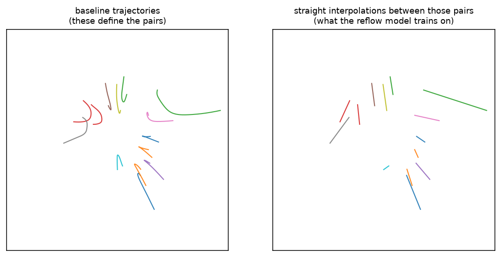
Three models with identical architecture are compared on held-out Gaussian starting points, at the same step counts, averaged over two seeds. baseline is the Part 2 model. reflow is a fresh model trained for 6,000 steps on the paired endpoints. baseline+6k is the compute-matched control: the baseline trained for 6,000 more steps on its original objective, so that any improvement attributable merely to extra optimisation can be separated out.
| Euler steps | baseline | baseline+6k (control) | reflow |
|---|---|---|---|
| 1 | 0.9700 ± 0.0003 | 0.9672 ± 0.0008 | 0.2187 ± 0.0002 |
| 5 | 0.3177 ± 0.0035 | 0.3073 ± 0.0006 | 0.1711 ± 0.0044 |
| 10 | 0.2060 ± 0.0005 | 0.1997 ± 0.0013 | 0.1682 ± 0.0042 |
| 25 | 0.1653 ± 0.0051 | 0.1648 ± 0.0070 | 0.1658 ± 0.0041 |
| 50 | 0.1598 ± 0.0068 | 0.1627 ± 0.0080 | 0.1652 ± 0.0040 |
| Path straightness (mean excess length, 200-step common grid) | Value |
|---|---|
| baseline | 0.3735 ± 0.0056 |
| baseline+6k (control) | 0.3846 ± 0.0060 |
| reflow | 0.0002 ± 0.0000 |
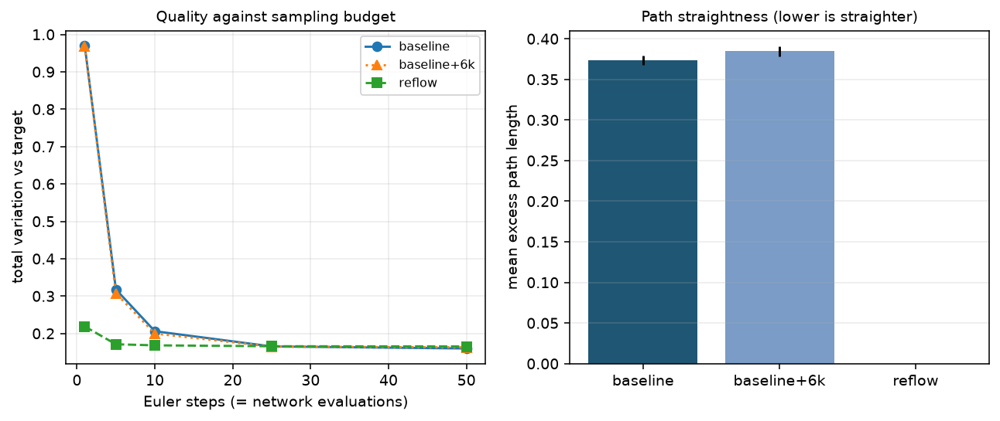
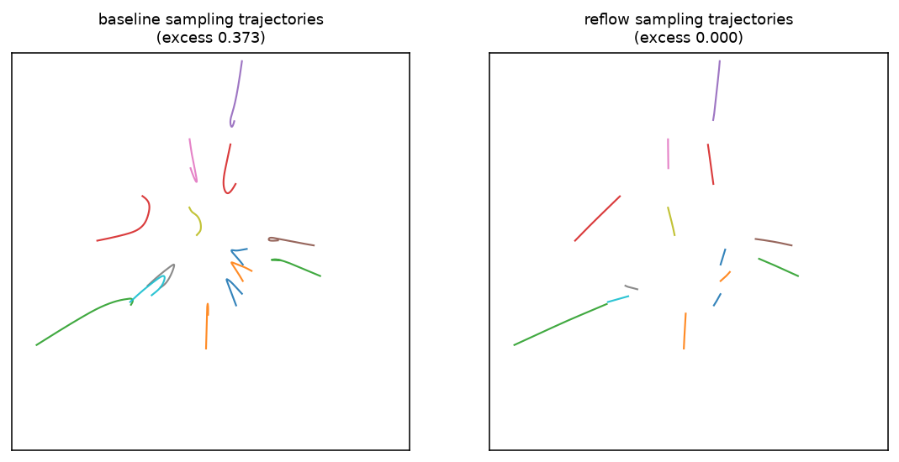
Cost, reported separately from inference. Paired dataset generation 0.683 s, reflow training 5.28 s - 5.96 s total extra. The compute-matched control cost 5.31 s of training. Sampling time per run is unchanged between models at a given step count (for example 53.9 ms for the baseline and 53.8 ms for reflow at 50 steps), because the architecture is identical; reflow buys quality at low step counts, not faster steps.
The hypothesis is supported, in the specific form it was stated. Reflow removes essentially all of the path curvature - mean excess length falls from 0.3735 to 0.0002, a 99.9% reduction, with the trajectories visually straight in Figure 15 - and it converts that into large quality gains exactly where coarse integration hurts. At a single network evaluation the discrepancy falls from 0.9700 to 0.2187. Reflow at 5 evaluations (0.1711) sits between the baseline at 10 (0.2060) and at 25 (0.1653), so roughly 2–5× fewer evaluations are needed for comparable quality.
The compute-matched control rules out the obvious alternative. baseline+6k received the same 6,000 extra optimisation steps and did not straighten at all (0.3846, marginally worse than the baseline's 0.3735), nor did it improve meaningfully at one step (0.9672 against 0.9700). The gain is attributable to the change of training pairs, not to additional training.
Where the gain stops. At 25 and 50 steps the three models are indistinguishable. Reflow differs from the baseline by +0.0005 and +0.0054, against combined seed-to-seed spreads of 0.0065 and 0.0079 - both differences are inside the noise, so this run gives no evidence that reflow either helps or harms once the sampling budget is generous. Reflow buys nothing when there are already enough steps to follow a curved path accurately.
Generative AI (Claude, Anthropic) was used while preparing this project: for drafting and debugging the
implementation and for help structuring this report. All experiments were run by me on my own machine, and every
number reported here comes from the JSON files in results/, which are included in the code submission.
python part_1.py env python part_1.py all python part_2.py all --text S python part_3.py all
Total runtime about 70 s of training plus a few seconds of evaluation, on the CPU listed in section 1. Figures are
written to figures/ and every number to results/.